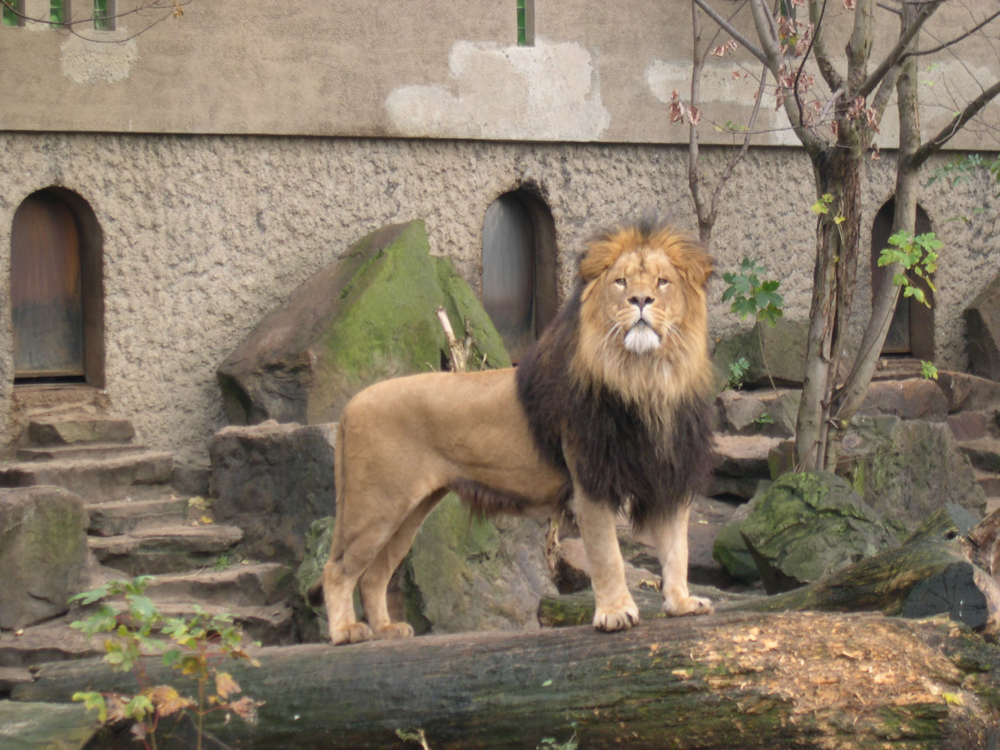

Blok3en4
In blok 3 en 4 werden er groepjes gevormd. Ons groepje bestond uit Rosa, Milan, David, Tessel en Wouter. Wij hebben gekozen voor de opdracht van Artis. Uiteindelijk moeten wij ons producten aan Artis presenteren. Artis is bezig met de bouw van een nieuw museum: Het Groote museum. Wij kregen de opdracht om een vitrine in te richten. Het onderwerp van de vitrine is ant colony optimization.

De Artis opdracht